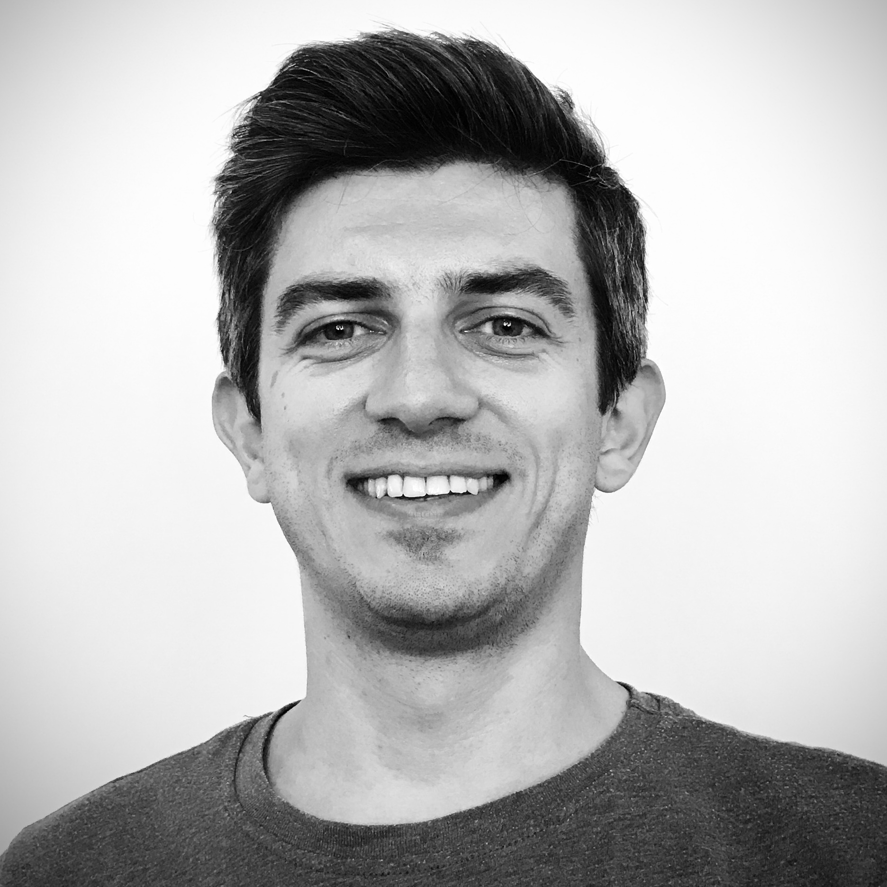

Berkan Lafci
PhD Candidate at ETH Zurich
Areas of Research:
• Optoacoustic and Ultrasound Imaging
• Deep Learning for Image Reconstruction
• Medical Image Processing
News
• 5 Feb 2020
Will give a talk about segmentation of optoacoustic images using deep learning models at Photonics West, San Francisco, California, US
• 4 Nov 2019
Attended 1. Annual Meeting of International Photoacoustic Standardisation Consortium, London, UK
• 27-28 June 2019
Attended "Series of Lectures on Waves and Imaging", Zurich, Switzerland
• 1 Mar 2019
Started my PhD at ETH Zurich under supervision of Prof. Daniel Razansky
Papers
• B. Camli, E. Kusakci, B. Lafci, S. Salman, H. Torun and A. D. Yalcinkaya, "Cost-Effective, Microstrip Antenna Driven Ring Resonator Microwave Biosensor for Biospecific Detection of Glucose," in IEEE Journal of Selected Topics in Quantum Electronics, 2017.
• B. Camli, E. Kusakci, B. Lafci, S. Salman, H. Torun, A. Yalcinkaya, "A Microwave Ring Resonator Based Glucose Sensor", Procedia Engineering, 2016.
• E. Mercep, B. Lafci, X. Dean-Ben, and D. Razansky, "Quantitative image correction using semi- and fully-automatic segmentation of hybrid optoacoustic and ultrasound images," in Biophotonics Congress: Biomedical Optics Congress 2018.